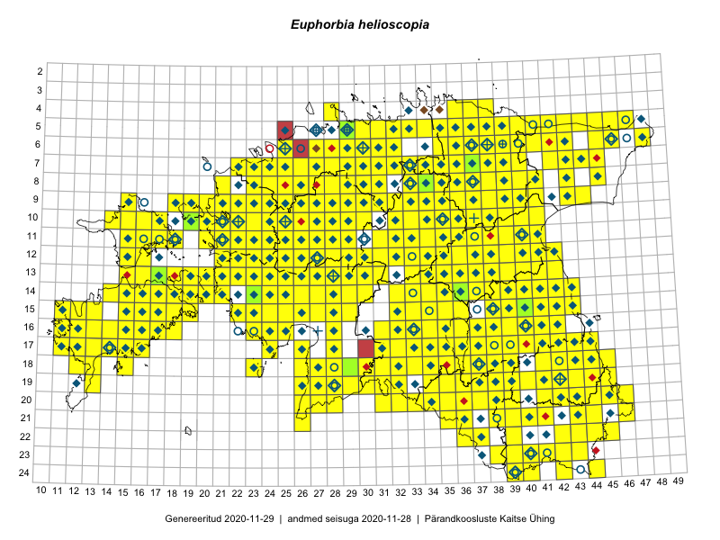

Euphorbia helioscopia
Uuendatud: 2016-12-01
Kaardile koondatud taksonid: Euphorbia helioscopia L.

Kaart põhineb 566 kirjel, neist vaatlusi 564 ja eksemplare 2.
Kuvatud viited 20 esimesele andmebaasikirjele, ülejäänud PlutoFis
- Tiit Hallikma, Toomas Kukk, Indrek Tammekänd: 2015-06-09: 12-28: ala
- Malle Leht: 2015-07-09: : ala
- Peedu Saar, Timo Luhamäe: 2015-05-11: 12-36: ala
- Peedu Saar, Timo Luhamäe: 2015-05-13: 06-39: ala
- Toomas Kukk, Eerik Leibak: 2015-08-09: 13-15: ala
- Rein Kalamees: 2015-06-08: 05-32: ala
- Malle Leht: 2015-08-02: : ala
- Toomas Kukk, Eerik Leibak: 2015-08-09: 14-15: ala
- Toomas Kukk, Eerik Leibak: 2015-08-08: 15-18: ala
- Toomas Kukk, Eerik Leibak: 2015-08-12: 10-17: ala
- Toomas Kukk, Peedu Saar: 2014-09-25: 07-42: ala
- Toomas Kukk, Indrek Tammekänd: 2015-05-09: 13-27: ala
- Peedu Saar, Toomas Kukk: 2015-05-26: 10-17: ala
- Tiit Hallikma, Toomas Kukk: 2015-07-21: 05-45: ala
- Toomas Kukk, Indrek Tammekänd: 2015-05-10: 12-33: ala
- Toomas Kukk, Raivo Kalle: 2015-05-13: 07-37: ala
- Toomas Kukk, Raivo Kalle: 2015-05-12: 10-40: ala
- Peedu Saar, Ott Luuk: 2015-06-21: 14-41: ala
- Ott Luuk, Peedu Saar: 2015-07-27: 11-35: ala
- Peedu Saar: 2015-07-04: 18-44: ala